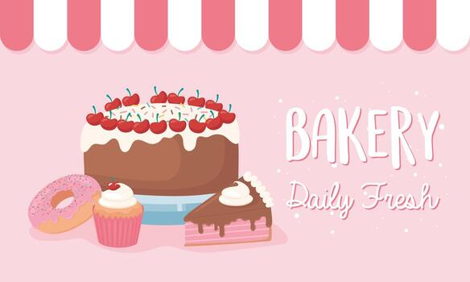

Triple Chocolate Cake

R89 – Rich dark chocolate layers, milk chocolate mousse, and glossy ganache.
handcrafted joy · bakery & confectionery
Where every bite tells a story of love and fine ingredients. Since 2016, we've been baking happiness with artisan cakes, fresh muffins, buttery scones, ice creams and delightful candies. All made from scratch, daily.

Explore our most beloved treats – each crafted to perfection.
R89 – Rich dark chocolate layers, milk chocolate mousse, and glossy ganache.

R29 – Fresh wild blueberries, lemon zest, crunchy almond streusel.

R38 – Flaky golden scones served with berry jam & whipped cream.

R55 – Gourmet gummies, sour belts, chocolate drops & retro fizzers.
See our full menu with all cakes, muffins, ice cream, scones & candy
Place any order totaling R200 or more and receive:
Just mention "SWEET200" at checkout. Available for in-store pickup and local delivery.
Hurry – treat yourself and share the sweetness!
Sweet Desserts started with a simple idea: to bring back the warmth of homemade baking. Every recipe is developed in our small kitchen, using real butter, free-range eggs, and the finest chocolate. We believe dessert should be an experience — one that comforts, surprises, and delights.
From our family to yours, we bake with passion and serve with a smile.

Address: 12 Sugar Lane, Cape Town, 8001
Phone: +27 21 555 8789
Email: hello@sweetdessert.co.za
Custom cake orders require 48h notice. Contact us to place your order!
"The red velvet cake is to die for! Perfect texture and not too sweet. Sweet Desserts is my go-to for celebrations."
"Best scones in town! Their candy bags are also a huge hit with my kids. Love the R200 freebie deal."